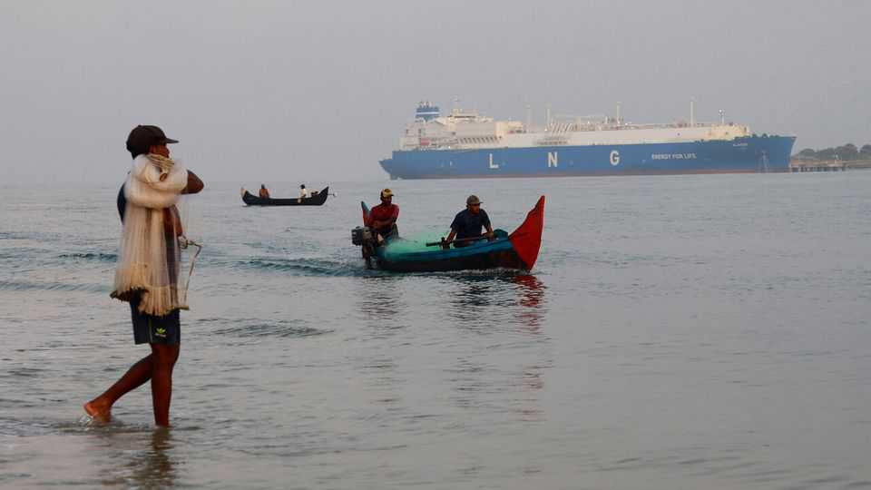
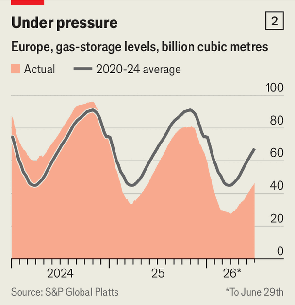
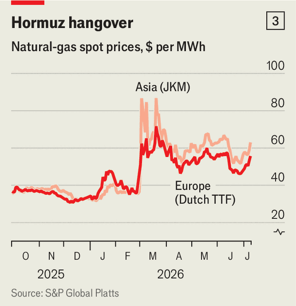

Three ways the LNG market could crack before winter
War, weather and outages may still send gas prices soaring
July 9th 2026

ON JUNE 28TH the Hlaitan, a tanker laden with liquefied natural gas, set off for France from Freeport, Texas. Almost immediately it changed course. TotalEnergies, its charterer, had received a better offer from Asia. According to Kpler, a data firm, the Hlaitan is due at its new destination on August 1st.
Such stories have become common. Buyers in Asia, where a scorching summer is turbocharging demand, are outbidding Europeans for American cargoes at every turn. LNG tankers are being diverted in record numbers (see chart 1). In sidelined Europe, gas storage, drained by a cold winter, is only 47% full—the lowest in 15 years at this point of the summer (see chart 2).

Behind this is a lack of supply from Qatar, usually Asia’s main provider. Since America and Iran agreed in mid-June to reopen the Strait of Hormuz, 11 LNG tankers have traversed the waterway—better than none, but just three days’ normal traffic. On July 7th America began striking Iran, in retaliation for Iranian attacks on tankers (including a Qatari LNG one a day earlier). President Donald Trump also revoked a waiver which allowed Iran to sell its oil and declared the ceasefire with the Islamic Republic to be “over”.

Unlike oil prices, which despite an uptick amid the latest hostilities are well below their war-time highs, gas prices remain 55% higher in Europe, and 73% higher in Asia, than in February (see chart 3). Analysts expect Qatari flows to be back to normal by September, just in time for Europe to restock before winter. But a more malign scenario is still uncomfortably plausible.
The war in Iran has deprived the world of a fifth of its LNG flows. It has also knocked out 17% of Qatar’s export capacity, which will take years to rebuild. Restarting surviving plants takes time. Despite extra supplies from Africa and Australia, lured by rising prices, and lower demand owing to Asian countries’ power-saving measures, industrial users’ deferred purchases and the restarting of coal-fired plants, the world will be short of a cumulative 40m tonnes of Qatari LNG this year. That is almost a tenth of last year’s supply.

And that is before Asian and European importers start replenishing their winter stocks. Most are waiting as long as they can. One reason is that prices remain high; another is that prices for winter deliveries are no higher than today’s. If Qatari supplies return by September, Asian demand for American cargoes should ease, spot prices fall and European buyers restock. By November EU stores would be some three-quarters full—low, but enough for a normal winter. Prices ought to stay under control.
But the market is so tight that a succession of small shocks could precipitate a crunch. Three risks stand out. First, Gulf supplies may not return on time. Hours after the Qatari gas tanker was hit near the entrance of the strait on July 6th, another heading for Hormuz turned around. A dozen ballast tankers are waiting near Ras Laffan to load. But repeated skirmishes, let alone a collapse of the ceasefire, could rattle buyers and push Asia to bid even harder for American cargoes.
A second risk is extreme weather. In June Europe suffered record temperatures, which pushed up demand for cooling and so power (see chart 4). In Asia El Niño—a climatic phenomenon that brings hot, dry weather to the region—is also pushing the mercury abnormally high, forcing countries such as Bangladesh and Pakistan back onto the spot market. More sizzling weather in either continent will mean more buying.

China’s unpredictable purchases add uncertainty. The world’s largest LNG importer mostly buys under long-term contracts. It does not stockpile gas as it does oil. What it does not need it resells, as it did in March and April. But when heatwaves struck in May and June, it resumed large imports; when welcome rain fell in late June, it retreated. Scorching temperatures might again cause it to buy in a hurry.
The third danger is that infrastructure fails. Prolonged dry spells drain hydropower reservoirs. Power prices in Switzerland have already jumped as it imports electricity from neighbours that use fossil fuels, notes Gillian Boccara of Kpler. If rivers are abnormally warm, nuclear reactors, which need cold water, may throttle back.
Then there are unknown unknowns. A big LNG terminal could break down, as when the Freeport plant, then accounting for 4% of global supply, caught fire in 2022. Strikes, like those in Australia in 2023, can disable facilities for weeks. Russia—which supplied record volumes to Europe this spring—could turn off the taps.
Several of these shocks at once could turn the manageable into a nightmare. “When bad news accumulates,” says Anne-Sophie Corbeau of Columbia University, “the effect on prices can turn exponential.” There is little scope left for switching fuels. South Asian countries will surely have to cut back. China, Japan and South Korea are rich enough to keep bidding. Europe will not freeze this winter. But it could face an enormous heating bill.■
For more expert analysis of the biggest stories in economics, finance and markets, sign up to Money Talks, our weekly subscriber-only newsletter.